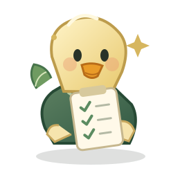

CUMPLIMIENTO DE HOY
0%0 de 21 hábitos completados

Entra a tu espacio y sigue construyendo pequeños hábitos que te acercan a tus metas.
Avanza a tu ritmo, registra tus acciones y convierte los pequeños pasos en una rutina sostenible.
Escribe una intención en tu reflexión diaria para darle dirección a mañana.
Marca los hábitos que cumpliste. Puedes editar el registro del día y guardarlo cuando termines.
Consejo: un día difícil no borra el progreso anterior. Registra con honestidad y continúa.
Visualiza tu consistencia y revisa el porcentaje de hábitos cumplidos cada día.
Encuentra fortalezas, observa patrones y elige un hábito para trabajar esta semana.
Reconoce lo que salió bien, identifica obstáculos y define una intención realista para mañana.
Una guía para mantener presentes tus rutinas. Los avisos se muestran dentro de la aplicación; no son alarmas del sistema operativo.
Bebe agua y dedica unos minutos a estirarte.
Salud · MañanaRevisa tu progreso y vuelve a enfocarte.
Enfoque · MediodíaCamina, entrena o realiza alguna actividad ligera.
Movimiento · TardeReduce las pantallas y prepara tu rutina de sueño.
Descanso · NocheElige un porcentaje que sea retador pero realista para ti.
Protege tu progreso con copias de respaldo y restaura tus registros cuando lo necesites.
Descarga un archivo JSON con tu nombre, meta, hábitos registrados y reflexiones.
Importa un respaldo anterior. Los registros del mismo día se combinarán con el archivo seleccionado.
Exporta el progreso y el resumen de cada día en un documento de texto.
Elimina los registros de este perfil. Esta acción no se puede deshacer sin un respaldo.
Descarga una copia de seguridad con frecuencia para mantener a salvo tu historial y tus reflexiones.